k-Day 098｜絕不停止前進
看了風圖，未來一週都會是逆風天，決定在床上躺到退房。
下午出發前找間餐廳吃飽飽，目標是晚上七點找到能夠紮營的地方。
已經好久沒上傳日誌，實在是不敢在野外拿出電腦，除了無孔不入的風沙，螢幕藍光在草原上簡直是歡迎大家來搶我的訊號。
在韓國的時候也曾經這樣在旅店躺到中午，記得當時是感冒的緣故。但是和現在的心態完全不同，一想到剛洗完澡乾淨清爽的自己，又回憶起在路邊睡覺，滿身黏膩的沙土，實在相當抗拒這樣的野生狀態。
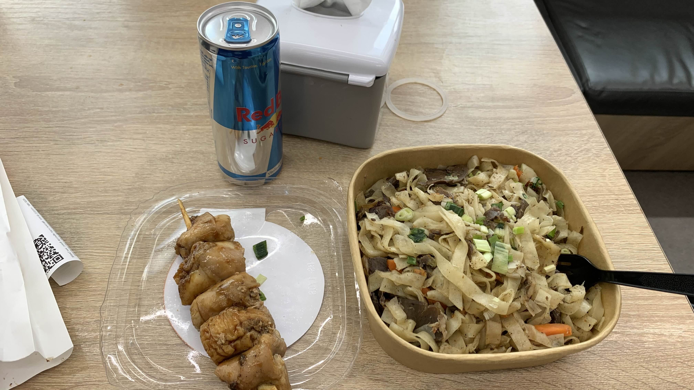
最後還是走進CU，拿了剩下的食物吃了幾口，看著窗外風越來越大，實在無法安心。
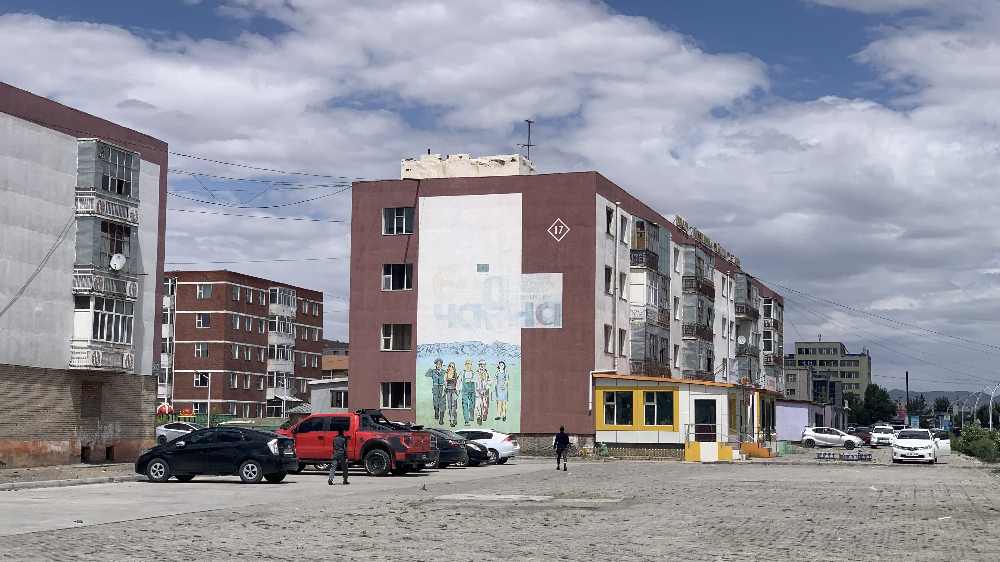
市區大多是這樣的集合住宅，
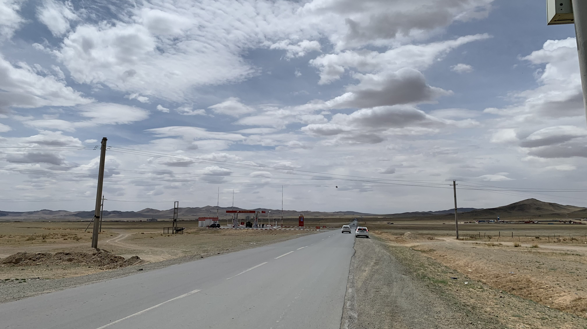
出城10公里，頂著風踩著上坡，突然被人從後方狠狠尻了一拳。六個人兩兩一組，同樣都是一個穿茶褐色、一個穿綠色的蒙古袍。這六人揍完我立刻加速，第一組人高舉著右手歡呼著。看到他們停在坡頂，我停下來確認狀況，過於氣憤，決定拼命踩踏板追上他們。
是想讓我摔車嗎？還是純粹找個追不上他們的人揍？一把鼻涕一把淚地繼續踩上坡，心想絕不能讓這種垃圾阻礙我。他們在山坡上站了許久，直到我快接近時，一群人又騎上車，往山的那一邊離去。至此不得不承認自己被白揍了，只好低著頭默默往前進。
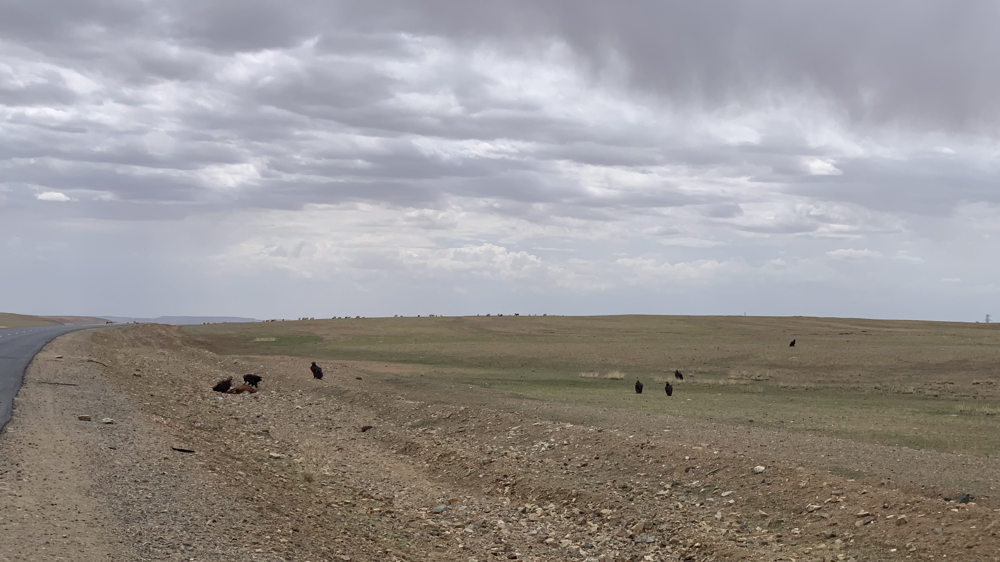
路旁聚集了一群大鳥，遠遠看著像是老鷹，但行走的姿態相當猥瑣，怎麼樣也不是。仔細看是一群禿鷹在啃食腐臭的動物屍體，其中一隻在我經過時張開翅膀飛了一圈重新回到草地上。
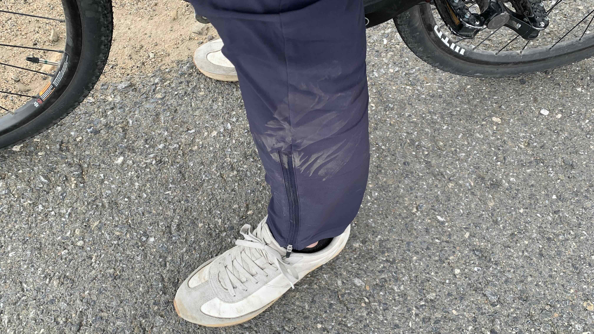
騎到30公里處，迎面而來又是一輛摩托，同樣穿著茶褐色和綠色蒙古袍，同樣是紅色金屬外框的牧民機車。兩人顯然在馬路下方等待已久，見我一到坡底，大聲吆喝著從對向土坡下衝上柏油路，並且逆向騎到我面前擋住我的去路。見我緊急按了煞車，對方加速逼近，伸出皮靴用後跟朝我左腿脛骨踹了一腳。正想回頭追上他們，結果當然跟剛剛一樣，只能遠遠瞪著兩人。
作為昭和末年出生的人類，對於這種踹一下、打一下就跑的行徑實在不齒。明明是施暴的一方，卻連面對面一較高下的勇氣都沒有，逃跑的速度快得像是意識到自己沒有顏面活在地表上似的，忽必烈的臉都被你們丟光了。
心裡想著這些，也考慮今天是否要頂著逆風夜騎直到抵達下一個城鎮。沒想到翻過坡頂後，下方出現一排蒙古包。招牌上寫著Buudal。一名穿著紅衣的男子看到坡上的我，用蒙古店家招牌的轉手手勢招呼我過去。
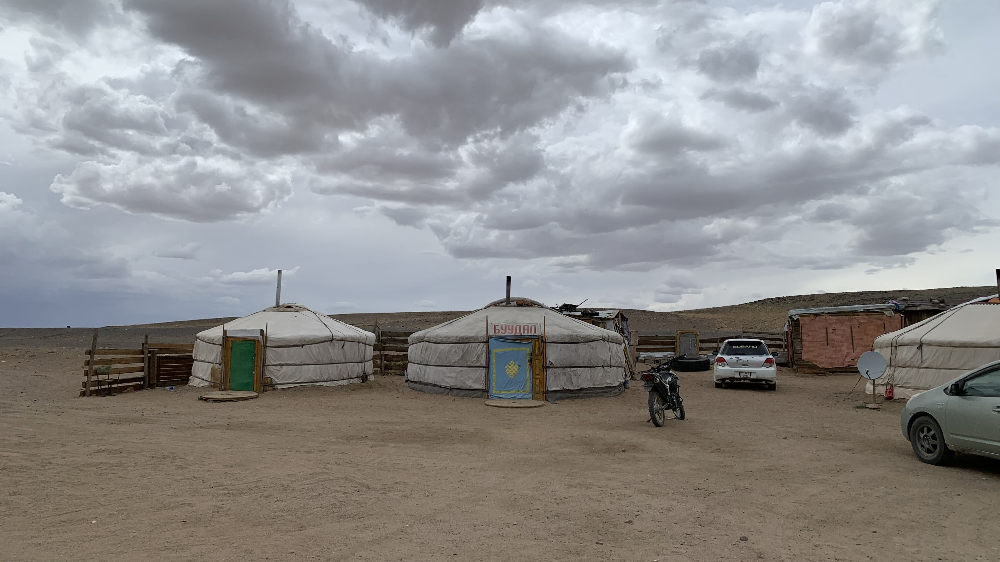
在坡上觀望了一會兒，不確定要不要進去。剛剛在另一端剛被踹，突然出現地圖上沒人標誌的蒙古包餐廳，怕不是什麼攬客手法吧。
然而這個時間沒可能騎到下一個人類據點，想了一想，還是決定滑下去。一名貌似老闆的女性出來，詢問他能否讓我在旁邊露營。非常理所當然地說可以，「不過如果住裡面的話可以讓我把車帶進去喔！」老闆一邊說一邊開門要我看看。
今天著實有點無奈，要是不貴的話也許睡在裡面比較安心。看起來是老闆女兒的人用手機翻譯說一晚兩萬元，不過同一個時間老闆對著我用手比了個五。決定無視老闆，用手機確認真的是兩萬嗎？女兒點了頭。既然如此那就住下吧。
將二十三號推進蒙古包裡，坐在床上檢查傷勢，破了皮流了一點血，肌肉只是微微隆起，骨頭應該沒啥妨礙。
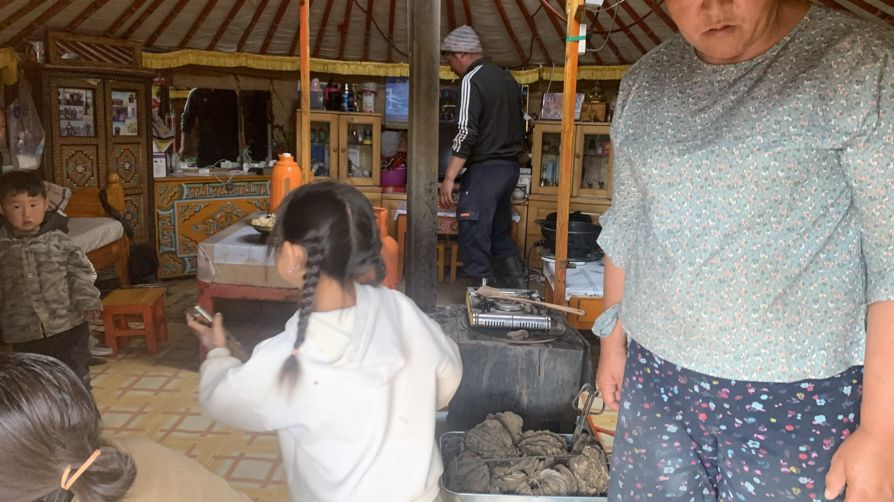
不久後老闆的女兒招呼我到餐廳吃飯，多了一名男子，應該是老闆的老公，以及另一位不確定是不是親戚還是朋友的女性。女兒幫我和他爸爸說了騎車被揍的事，我點點頭說對，就在那一邊。用手指了蒙古包外的山坡，做出右手出拳左腳踹人的動作。沒想到爸爸聽到後露出驚恐的表情，立馬衝到放車的蒙古包，推開門看到二十三號後又走了出來。可能是看到我有些疑惑地看著他，就笑著用肢體示意要去揍他們。真是謝謝了，不過為啥先看車呢？
天色尚早，坐在空地上發呆，餐廳蒙古包裡聚集了不少客人，突然想到可以問他們往西走還有沒有石人。找了圖片給他們看，餐廳裡的人們一陣討論，結論是那些石人都在難以到達的地方，只是沿著公路騎的話確實是看不到。不過依然給了兩個地名，一個在烏列蓋，另一個就在巴彥洪戈爾的北邊河谷「Erdenetsogt」。
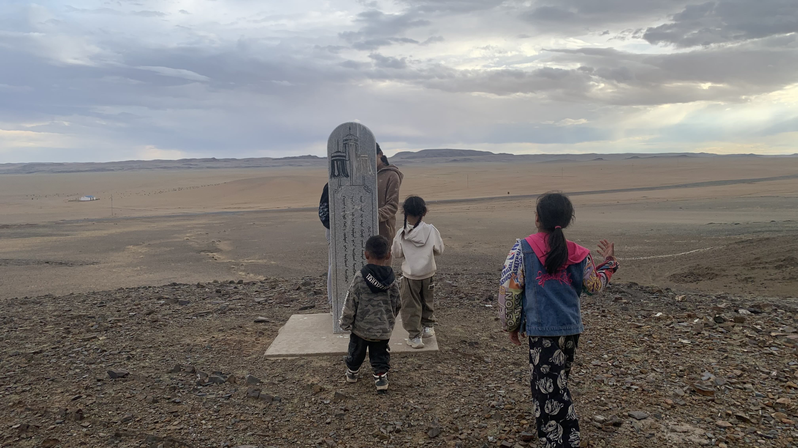
又找了另一些我存的照片，他們看到其中一個現代石碑，立刻說這種石碑後面就有一個，要我現在就過去看。還沒反應過來，蒙古包裡所有的小朋友就帶著我往後山走。上了山果然看到一座現代石碑，但是用的是傳統蒙文，因此小孩們也得用手機查字。
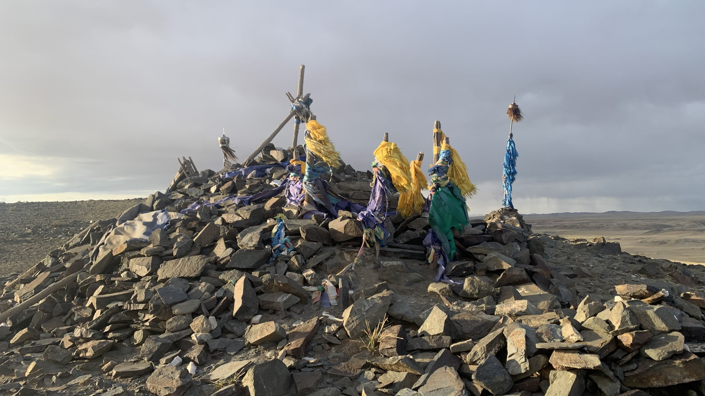
看完石碑問他們能不能再往山頂上看，上去後出現一座巨型敖包。
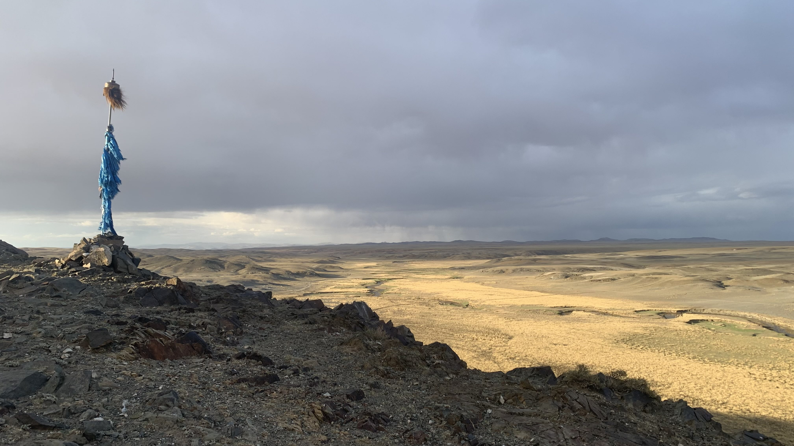
東邊就是早上來的河谷，夕陽下一片黃色，左邊的高原則是明天要去的方向。
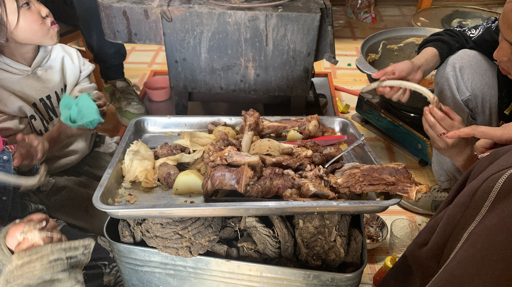
爬完山回到蒙古包，老闆招呼我進餐廳和大家一起吃羊肉。小孩突然大叫：「有彩虹！」探頭出去一看，實在神奇，沒有下雨怎麼就出現彩虹了？
坐在門口聽大家聊著天，已經九點多了，是必須睡覺的時間，於是回到自己的蒙古包。今天出去爬山吃飯都沒帶上財物證件，黑色馬鞍袋也開著，翻了一下大致上東西都還在，就鑽進睡袋睡覺。
沒過多久，其中一位今天一起玩的小女孩爸爸回來，帶著小女孩推開我的蒙古包門，打開燈，兩人一起躺在大通鋪上和我閒聊。主要說的就是騎車腳很痛，很冷，他絕對不要，還有問我有沒有小孩，躺在床上的是他的孩子這類跟先前遇到的人差不多的問題。今天學到新單字「孩子」。
等這位爸爸離開後，鑽進睡袋繼續睡覺。
門又被推開，燈又再次亮起。
這次兩個爸爸都進來了，女兒也跟著進來用手機翻譯。小女孩的爸爸可能在餐廳那邊聽說我被打，進來後就開始問我在哪裡被打的？為什麼沒報警？對方是不是有喝酒？我搖搖頭，老實說要怎麼瞬間判斷對方是否喝酒呢。不過這麼一想也不無可能，那種往下踹的角度，如果清醒地穩住車身，應該能踩斷我的腳吧。只是下午一點到三點，這時間如果能喝到光天白日在路上打人，那真的應該送到戒酒中心了。
小孩爸爸又問：「為什麼不報警？」真是好問題，雖然買了本地網絡，但不知為何一出城就沒了訊號。我和他們兩位說：「以前也有台灣人在蒙古騎車，他被打還被搶，而且警察也沒找到人的樣子，所以我知道有可能會被打。」這當然不是真正的理由，我也不確定自己為什麼想這麼跟他們說。
說完後看左右兩邊的男子都沒說話，我於是補了一句：「但是我的相機有錄下他們跑掉的影片。」老闆的老公突然開口：「可以把你的手機拿出來看。」我指了正放在角落充電的手機，沒有拿出自己口袋裡的運動相機，他們不知說了什麼，女兒沒有代為翻譯。
「為什麼他們打我之後要跑掉呢？」我轉頭先看著老闆的老公，他沒說話。
小女孩的爸爸說：「他們怕你報警。」
「喔～」我發出原來如此的語氣。
小女孩的爸爸突然說：「我可以騎看看你的車嗎？」
「可以的。」我回答。
接著他倆開始觀察輪胎、馬鞍袋，指了指前貨架上的輪胎，露出疑問的表情。
「我還到蒙古後爆胎了六次，因此換了新輪胎。」
小女孩爸爸又指了把手，問上面裝的是什麼？
我按了三次車燈給他看。
他笑著說了什麼。後來開始介紹說這名正在用手機幫我們翻譯的是老闆老公的女兒。雖然早就知道了，還是配合地發出「欸～」的聲音。
不知道後來到底又說了什麼，兩人離開時已經十一點了。必須趕緊睡覺才行。
才剛鑽進睡袋，老闆和小女孩的爸爸又直接推門進來。
先是再一次介紹這位翻譯的女生是她女兒。
然後看到桌上喝到一半的Töe蘿蔔汁，說這是下午一起玩的小女孩的，於是把蘿蔔汁交給躺在我旁邊的小女孩爸爸。
這下就稍嫌過分了，我立刻指了蘿蔔汁，再指了自己，說那是我的。
老闆於是走到掛在二十三號的馬鞍袋旁邊，袋口還是開著。她把最上方食物袋裡的東西一個一個拿出來，對著我說：「咖啡。」我說對。
又拿出整包蛋白粉，說：「咖啡。」
接著撈出吃了一半的威化餅說：「這些都是小孩留下的。」
我又再說了一次：「這些是我的。」
老闆還想提起整個食物袋看下面的東西，這時坐在我旁邊，一直拿著手機協助翻譯的女兒屁股離開床鋪半公分，身體微微前傾，從喉間發出略為提高的短促叫聲，似乎是想制止她的母親繼續探究下層行李。
整個晚上幫我和大家翻譯的過程，他一直維持著中性的表情，甚至連讀出翻譯內容時也感覺不到絲毫試圖加入個人情緒的成分，這還是我第一次看到他對於某件事有反應呢。
女兒用手機翻譯問：「這些東西是你的嗎？」
我說：「對。」
躺在我左邊的小女孩爸爸拿著他面前的蘿蔔汁問我：「這是你的嗎？」
我說：「對。」
老闆接著問：「你還會回來嗎？」
「我很喜歡蒙古，所以到了巴黎後會再回來的。」
「你還會回來這個地方嗎？」老闆問。
我笑著沒有說話。
老闆坐到我旁邊拉近我的手臂，要女兒幫我們兩拍張合照。我說那我的手機也拍一份吧。
離開前老闆說這個門鎖不上，要小女孩爸爸在門鎖上挖一個凹槽。接著轉頭對我說：「沒鎖門很危險。」
「烏蘭巴托的人和我說這裡很安全，不鎖門也沒關係。」我對著女兒遞上來的手機話筒說。
老闆沒說話，只等門鎖搞定後大家互道再見。
看了看手錶，半夜十二點，拷問終於結束了。
一個人躺在蒙古包裡，回想今日（喔，已經是昨日了）沒被打殘實在萬幸，要是手被揍斷或者脛骨真的被踢裂，這場旅行就要改名成從京都到巴彥洪戈爾了。絕無不敬之意，但是聽起來就沒有京都到巴黎那樣帥氣。
基於如此明確的原因，無論如何我都不會停止前進。
今日花費： 住宿 200000元